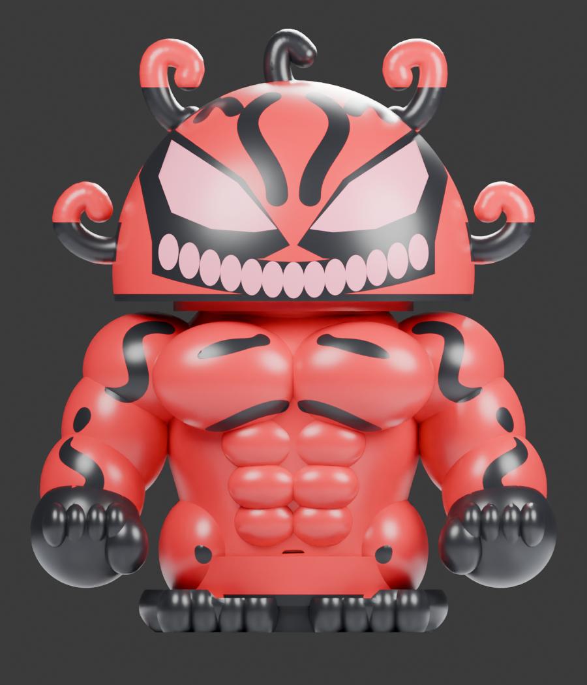
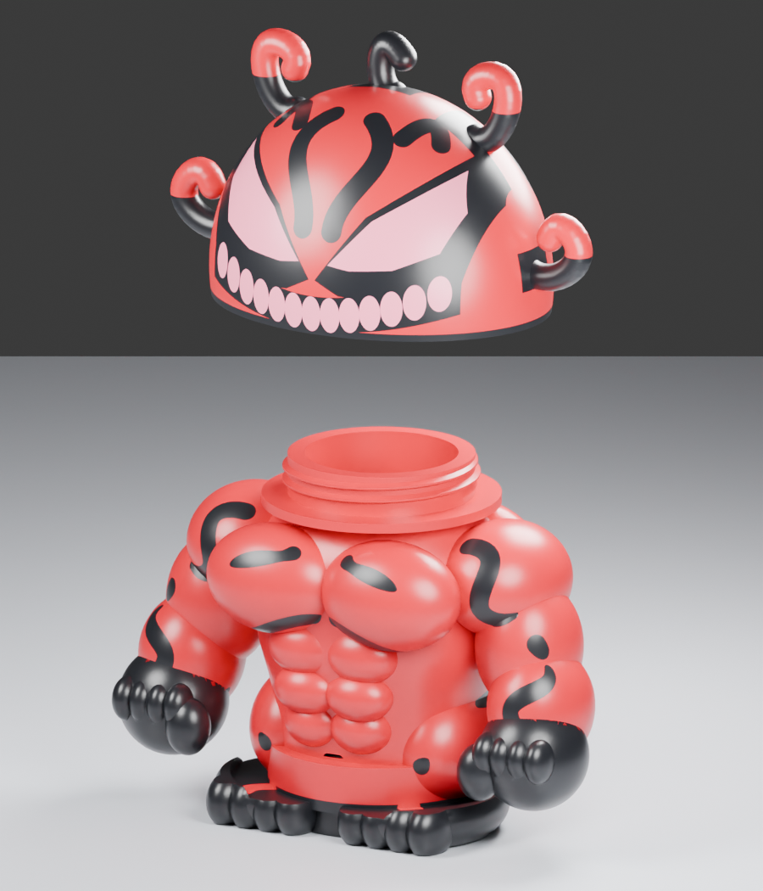
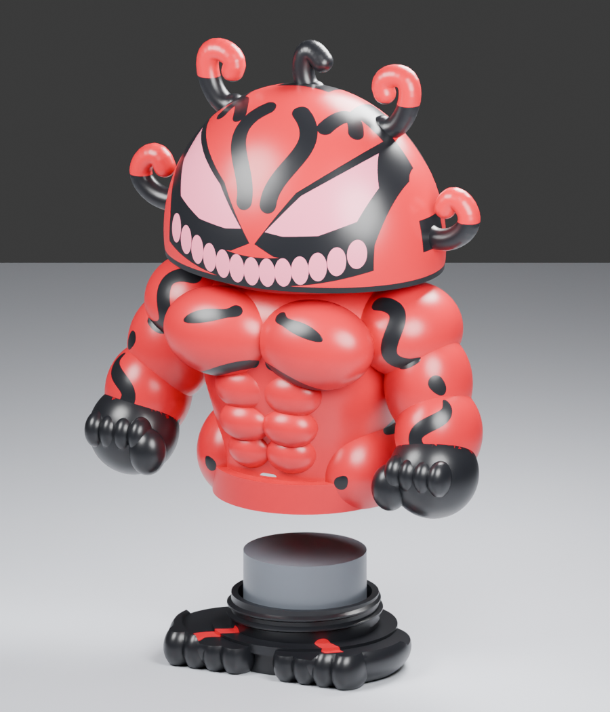
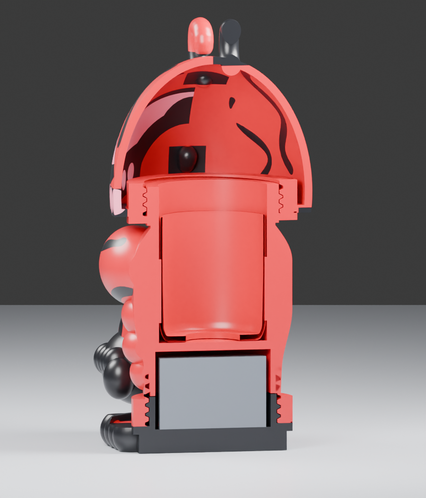
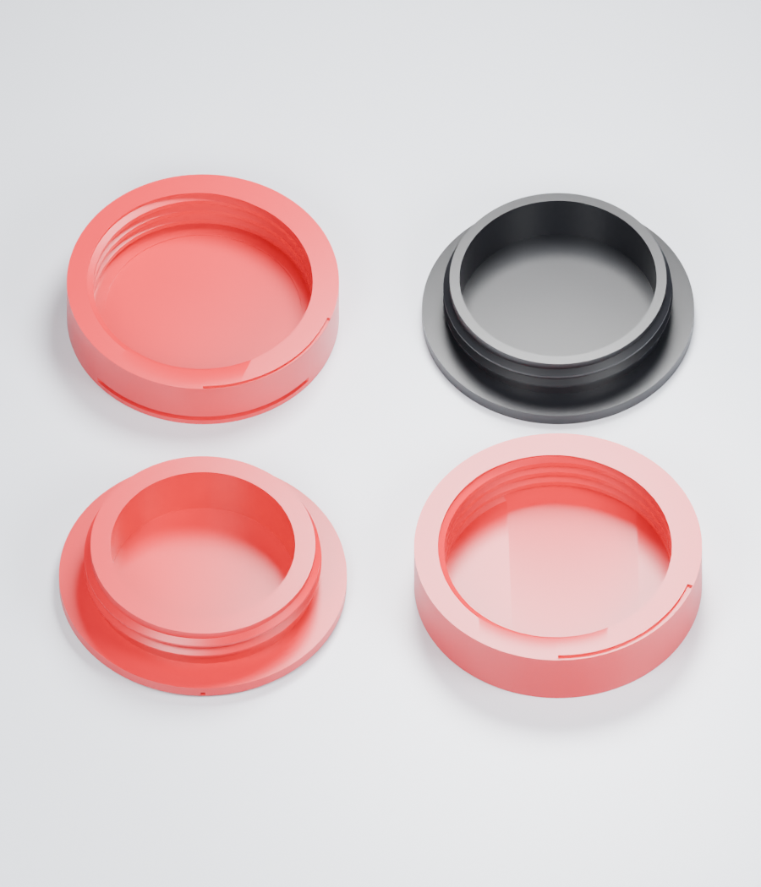

Print 01_SCREW_TESTS_V3.3mf before the three full assemblies. Assembly and print instructions.
Both closures are modeled and digitally checked. Physical fit, odor sealing and actual jar height remain unverified. No extra hardware is required.




